點擊圖片可放大 ／ 縮小
初步競品研究，主針對 DJ BOOM BOOM 的 CRM 功能。
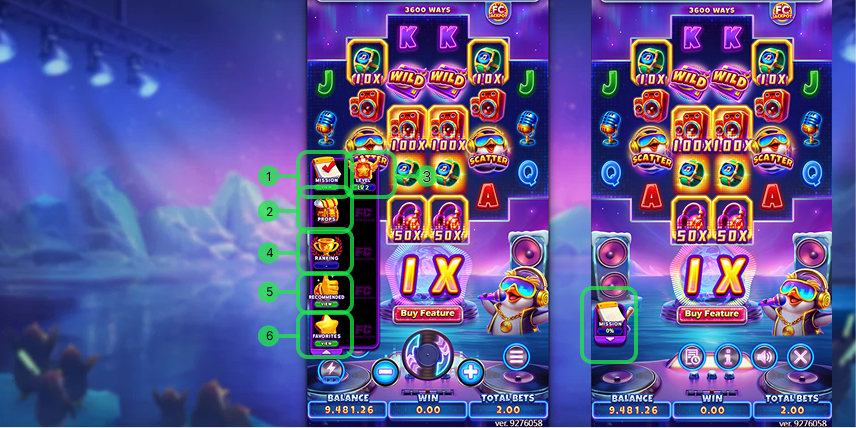
🔍 放大檢視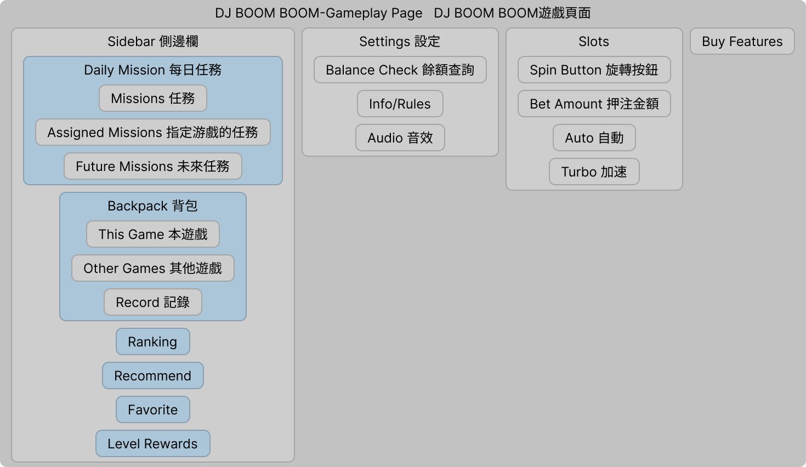
🔍 放大檢視主要的 CRM 功能都放到側邊欄，包含：每日任務、背包、排行榜、推薦游戲以及等級獎勵。
原報告的方向正確——FA CHAI 確實把 CRM 全部集中在側邊欄，這點與 JILI 不同。但實際模組數為 6 個。
另一個介面特徵值得記錄：側邊欄在關閉面板時為左側直向，開啟任一面板後會移到底部轉為橫向，屬動態導覽設計。
| # | 功能模組 | 位置 | 內容 |
|---|---|---|---|
| 1 | 任務 MISSION | 側邊欄 | 分成 挑戰任務 Challenge Mission 與 指定任務 Specified Mission，兩者皆有「每周完成 3 次」的上層獎勵 |
| 2 | 玩家等級 LEVEL | 側邊欄 | 等級進度與等級獎勵領取（本次帳號為 LV 5） |
| 3 | 背包/道具 PROPS | 側邊欄 | 本游戲 This Game／其他游戲 Other Games／道具記錄 Card Record |
| 4 | 排行榜 RANKING | 側邊欄 | 單局贏分／單局倍數排行，含歷史最高紀錄與回放；可切換本游戲／全部游戲 |
| 5 | 推薦游戲 RECOMMENDED | 側邊欄 | 游戲推薦牆，含玩法分類標籤與 ★ 收藏鍵 |
| 6 | 收藏 FAVORITES | 側邊欄 | 玩家收藏的游戲清單；空狀態改以「You May Like…」推薦填補 |
FA CHAI 的任務分為挑戰任務 Challenge Mission與指定任務 Specified Mission兩個獨立分類；兩者各自要求玩家在當周完成 3 個該分類的任務，才能各自領取一組每週獎勵——即「挑戰／指定各一組」，等同同時存在兩條獨立的每周任務線，而非共用同一組週目標。
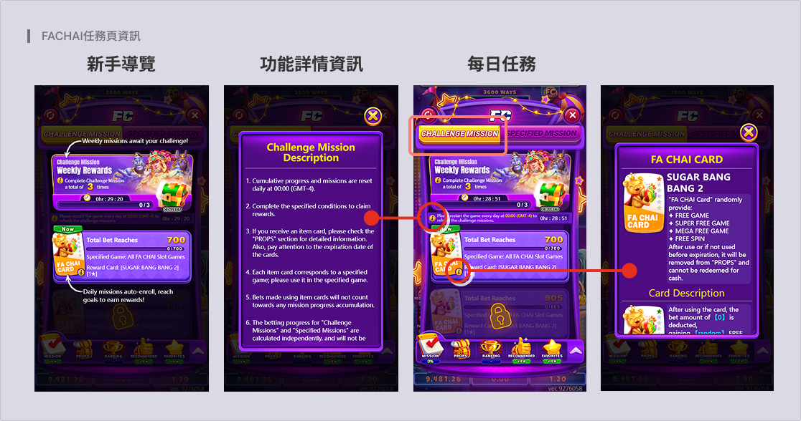
🔍 放大檢視方便與新用戶快速理解產品如何運作，減少「學習時段」
按下畫面的 info icon 會打開的彈窗。主要解釋：任務期限時間、如何完成任務以及其他注意事項
按下任務卡的 info icon 會打開的彈窗。獎勵以 FA CHAI CARD 呈現，卡片名稱直接對應目標游戲。
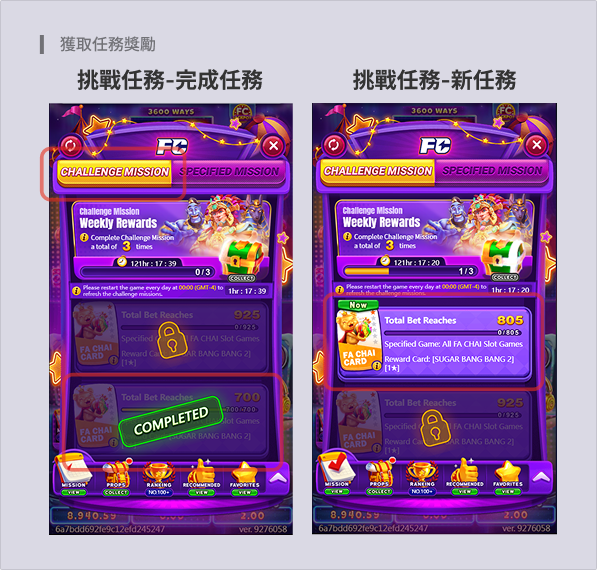
🔍 放大檢視需在當周完成 3 個挑戰任務才能獲得獎勵；有時間期限與規則
已完成的任務卡自動往下移，玩家無需親自領取，並顯示 COMPLETE。解鎖新的任務：當第一任務已完成時，新的任務卡會被開通。
任務頁常駐提示，玩家需每日 12:00 後自行重開游戲才能刷新任務，並附 1 小時倒數。任務不會自動刷新。
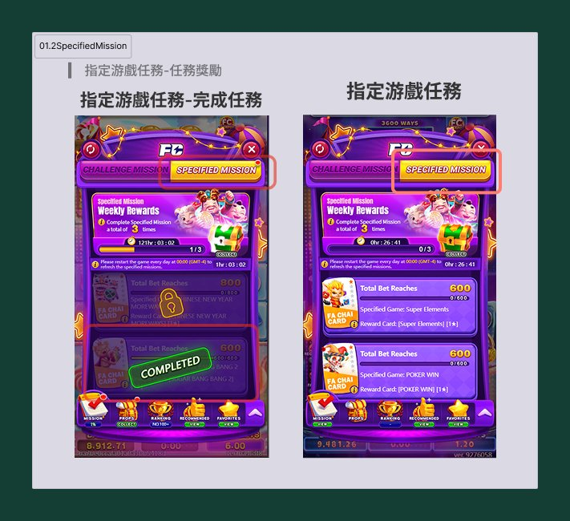
🔍 放大檢視需在當周完成 3 個指定任務才能獲得獎勵；有時間期限與規則
已完成的任務卡自動往下移；解鎖新的任務。實機任務卡標明 Specified Game，獎勵卡片名稱與該游戲同名。
FA CHAI 的指定任務卡只標示游戲名稱，沒有直接跳轉按鈕；JILI 的對應功能每張卡都有紅色跳轉箭頭可直接開啟該游戲。導流效率上 JILI 明顯較強。
不同時區截圖顯示的重啟時間不同（GMT+8 與 GMT-4），但指的是同一時刻——提示會依玩家時區換算顯示，非兩套規則。
也就是說，時間到達後任務不會自動更新，玩家必須自行關閉並重開游戲才會看到新任務。若玩家不知道這件事，就會以為任務停擺。
任務 CTA 需明確顯示不同狀態：未完成、已完成、未解鎖（FA CHAI 以鎖頭圖示表示未解鎖，可參考）
已完成的任務卡自動下移並顯示 COMPLETE，玩家無需手動領取，減少一次操作
活動期限需寫清楚；倒數計時對「每周任務」這種長週期目標特別重要
FA CHAI 的指定任務卡只標示游戲名稱，玩家得自己去大廳找；JILI 每張卡都有直接開啟該游戲的按鈕
若導流是這個功能的目的，缺少跳轉等於白做——我方開發時應比照 JILI 附上跳轉
跳轉前建議加一個「請確認」的彈窗，避免玩家誤離開當前游戲
本節已於 2026/08/25 以實機截圖覆核，內容確認無誤：三頁籤（THIS GAME／OTHER GAMES／CARD RECORDS）、空狀態文案、篩選選項與卡片欄位皆與記錄相符。
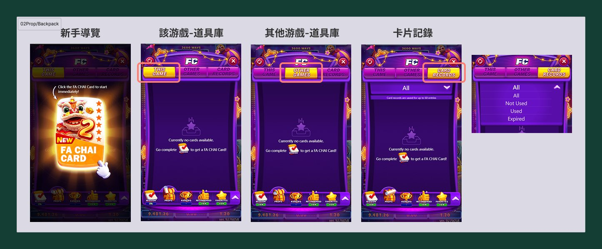
🔍 放大檢視方便與新用戶快速理解產品如何運作，減少「學習時段」
記錄本游戲道具，如 Free Spin 卡
記錄其他游戲道具，如 Free Spin 卡
記錄全部道具，包括用過的、沒用過的以及已過期的
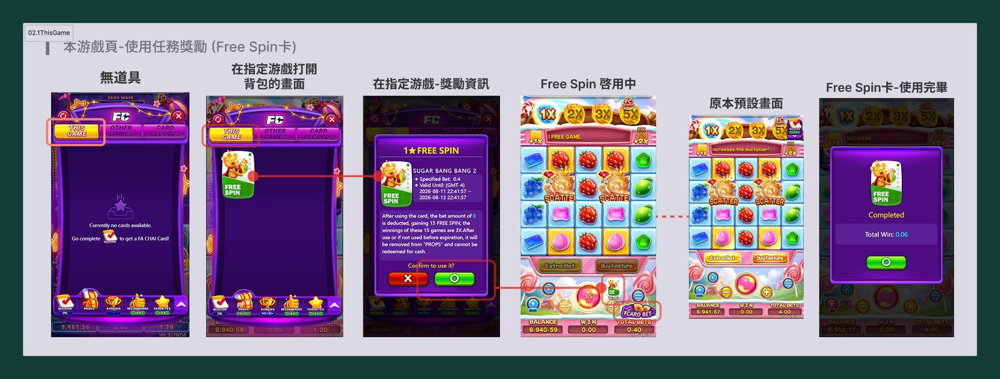
🔍 放大檢視玩家可點擊卡片，並打開道具的詳細資訊(圖片顯示：獎勵資訊)。按下確認使用會回到游戲畫面，會有動畫顯示正在使用道具。
在游戲畫面中，FREE SPIN 卡會出現在 SPIN 按鈕旁邊以及多了 CARD BET 的圖示；TOTAL BET 數額也會自動被更換
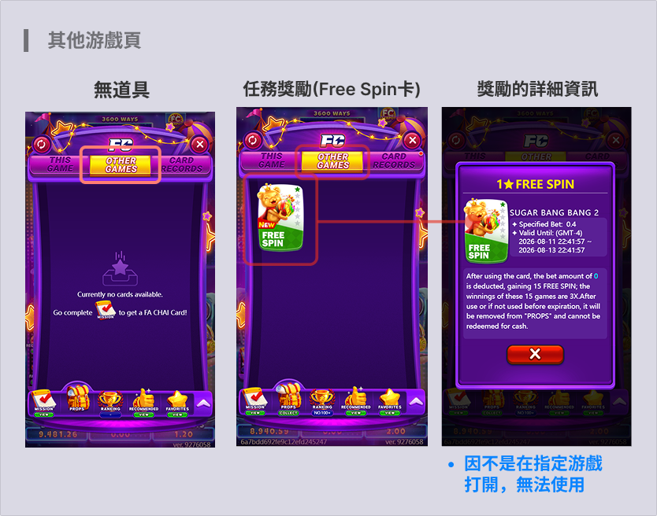
🔍 放大檢視玩家同樣可點開道具的詳細資訊，但因不在對應的游戲，無法直接使用
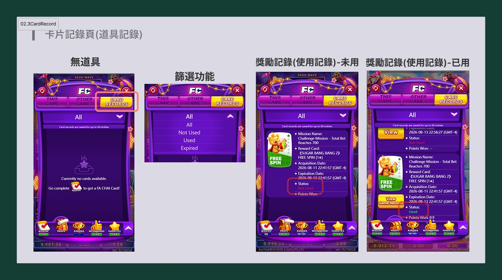
🔍 放大檢視玩家可看到道具的資訊：卡片來源(任務名稱/源頭)、獲得時間、過期時間、卡片狀態以及獲得數額
主要分兩種：未用、已用
「本遊戲」「其他遊戲」道具庫皆有明確空狀態插畫與文案
空狀態下附引導 CTA，鼓勵完成任務以取得道具卡
本遊戲／其他遊戲／卡片記錄，三頁籤與 Mission 分頁邏輯相同
跨功能維持一致的資訊架構，降低學習成本
下拉篩選：全部／未使用／已使用／已過期，狀態分類清楚
記錄僅保留近 60 筆，建議確認是否需要匯出或查詢更早紀錄
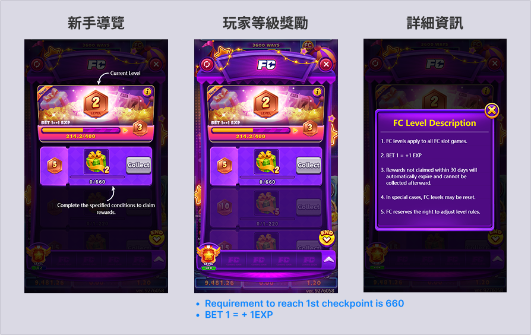
🔍 放大檢視方便與新用戶快速理解產品如何運作，減少「學習時段」
畫面呈現玩家當下的等級與經驗值；下方呈現每一個等級獎勵；每 5 等級會獲得一次獎勵
提供玩家有關等級獎勵的規則
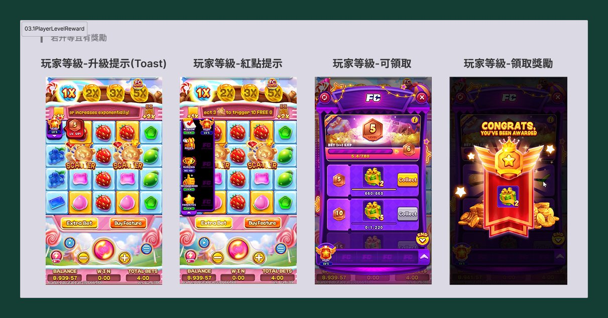
🔍 放大檢視FACHAI 在玩家達成升等獎勵時，側邊欄會有 toast(輕彈窗) 彈出來提示玩家目標已達成
若目標已達成，玩家在「玩家等級頁」可發現獎勵的「領取按鈕 (collect)」已亮起。點擊領取後，會有動畫以及彈窗的顯示
目前等級、下一等級與 EXP 進度條並列，數值即時可見
獎勵列表以卡片＋Collect 按鈕呈現，未達標示鎖定狀態
規則涵蓋所有 FACHAI 系列老虎機遊戲，非單一遊戲限定
Toast 出現的條件需説明清楚，如：當獎勵目標已達成且可領取，就會彈出提示
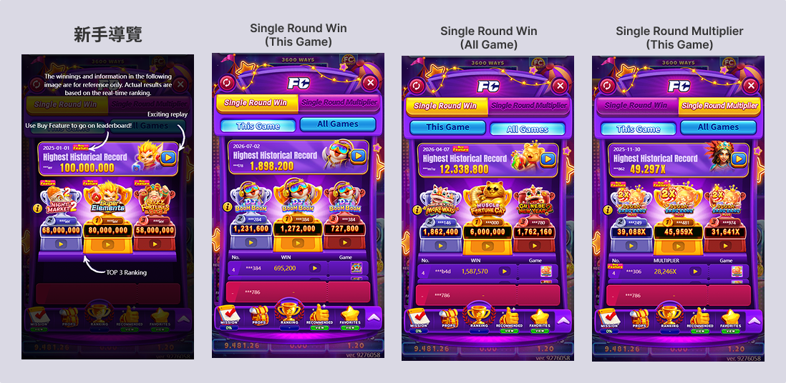
🔍 放大檢視Single Round Win（單局贏分）與 Single Round Multiplier（單局倍數）可切換；另有 This Game／All Games 範圍切換。
頂部常駐一張「Highest Historical Record」卡，含日期、遮蔽帳號、金額與回放按鈕。
前三名以頒獎台呈現，每位皆可回放；下方為完整排名清單，含 No./帳號/WIN/回放/Game 欄位。玩家自己那列以不同底色釘在清單中，未進榜顯示「-」。
新手導覽直接把排行榜與付費購買功能綁在一起
這是把 CRM 直接當成加購導流工具，在部分市場屬敏感設計，導入前務必確認法規
FA CHAI 與 JILI 都提供單局回放，需保存每局完整結果，須評估儲存期限與容量
新手導覽畫面附免責聲明，僅出現一次，並非常駐頁首
排行數值屬即時變動資料，以此方式明示「僅供參考、以即時排名為準」可降低爭議
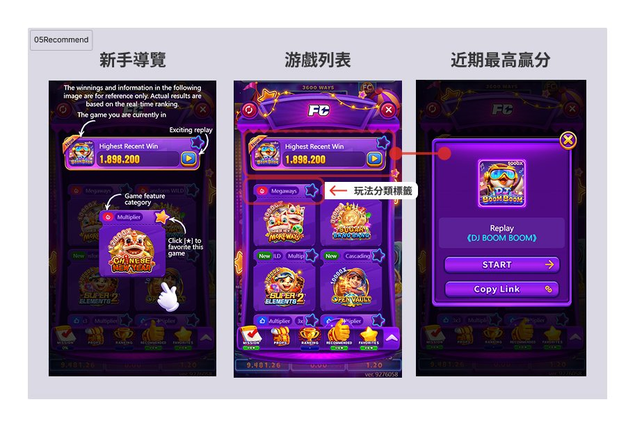
🔍 放大檢視每張游戲卡上方帶有玩法分類標籤：Megaways、Multiplier、Transform WILD、New… 讓玩家依機制而非只依畫面挑選游戲。
每張卡右上有星號，點擊即收藏，收藏結果進入 FAVORITES 模組。
頂部固定一張「Highest Recent Win」卡，標記 NOW 並附回放按鈕。
玩法分類要有價值，前提是每款游戲都被正確標記，需要一套內容管理流程
目前無法判斷推薦是個人化還是固定名單，建議我方開發時先想清楚排序依據
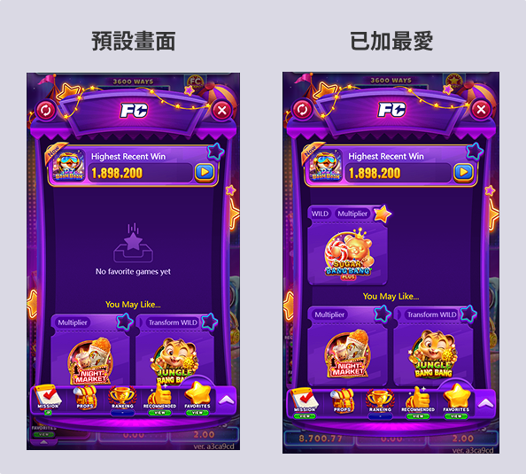
🔍 放大檢視由 RECOMMENDED 頁面的 ★ 收藏鍵觸發而來——★ 收藏本身才是全份報告中唯一由玩家主動操作的個人化功能，FAVORITES 頁面僅為該操作結果的彙整清單；其餘模組皆為系統推播。
空狀態顯示星形插畫與「No favorite games yet」，下方緊接「You May Like…」推薦牆，直接把空白轉為導流機會。
收藏若只是清單，價值有限；需想清楚是否用於推播、排序或個人化推薦
把空狀態當成推薦版位是低成本高效益的作法
除了每日任務外還有周目標，多一層「消費」的理由；且挑戰／指定兩類各有一組
與 JILI 不同，FACHAI 全部 CRM 功能都放到側邊欄（獎池除外）；側邊欄會隨面板開關在左側直向與底部橫向間切換
推薦牆以 Megaways／Multiplier／New 等機制分類，比 JILI 的純熱度排序更利於探索
獨立的 FAVORITES 模組，且空狀態直接轉為推薦版位
FAVORITES 的「No favorite games yet ＋ You May Like…」是值得全站沿用的作法
「Use Buy Feature to go on leaderboard!」把 CRM 直接當加購導流，法規風險需先確認
要求玩家每日 12:00 後自行重開游戲才能刷新任務，屬明顯體驗缺陷
指定任務只標游戲名稱、無跳轉按鈕；JILI 每張卡都可直接開啟該游戲
初步競品研究，主針對 Super Ace 的 CRM 功能。
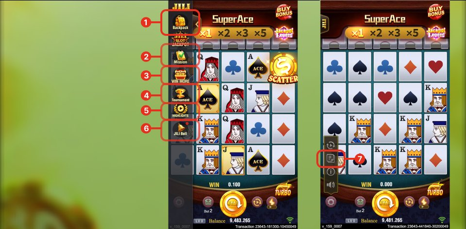
🔍 放大檢視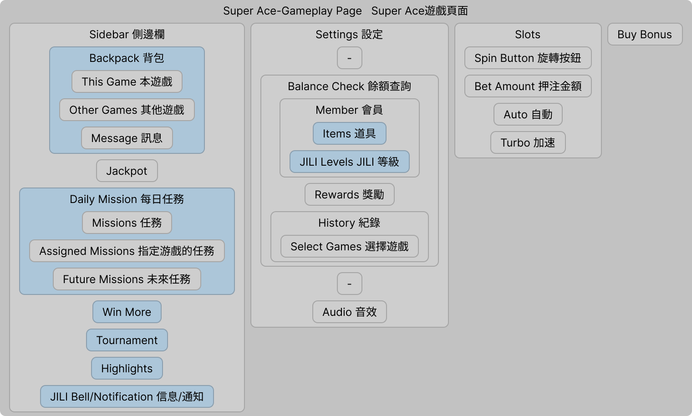
🔍 放大檢視與 FACHAI 最大的差別是 JILI 有一個「會員/玩家資訊專區」，在該專區內可查看玩家的道具以及等級獎勵。
JILI 的 CRM 面積遠大於原先記錄。側邊欄實際有 7 個模組，其中 JILI SLOT JACKPOT、WIN MORE、競賽 Tournament、HIGHLIGHTS 四項原報告完全未涵蓋。此外「玩家等級」並非只在交易記錄內：等級獎勵的實際領取介面位於 WIN MORE → Free Gift，屬側邊欄範圍。
| # | 功能模組 | 位置 | 內容 |
|---|---|---|---|
| 1 | 背包/道具 Backpack | 側邊欄 | 玩家查看自己道具的空間（本游戲／其他游戲／信息） |
| 2 | JILI SLOT JACKPOT | 側邊欄 | 跨游戲累積獎池，分 Grand／Major／Mini 三層即時金額 |
| 3 | 任務 Mission | 側邊欄 | 玩家獲得任務的空間（每日／指定游戲／未來任務） |
| 4 | WIN MORE | 側邊欄 | 六個子分頁：Events／TOP 50／Free Gift／You May Like／Link Jackpot／Features |
| 5 | 競賽 Tournament | 側邊欄 | 玩家排行榜，依累積贏分計算（非下注額），含 Info／Rank／Reward／Rules |
| 6 | HIGHLIGHTS | 側邊欄 | 大獎排行與回放／存圖／分享連結，具社群擴散性質 |
| 7 | JILI 鈴鐺 (信箱) JILI Bell | 側邊欄 | 玩家的信箱，支援全選、全部已讀與刪除 |
| 8 | 交易記錄 (道具+玩家等級) Transaction | 設定 | Member／Rewards／History 三頁，含 JILI LV 等級表與規則 |
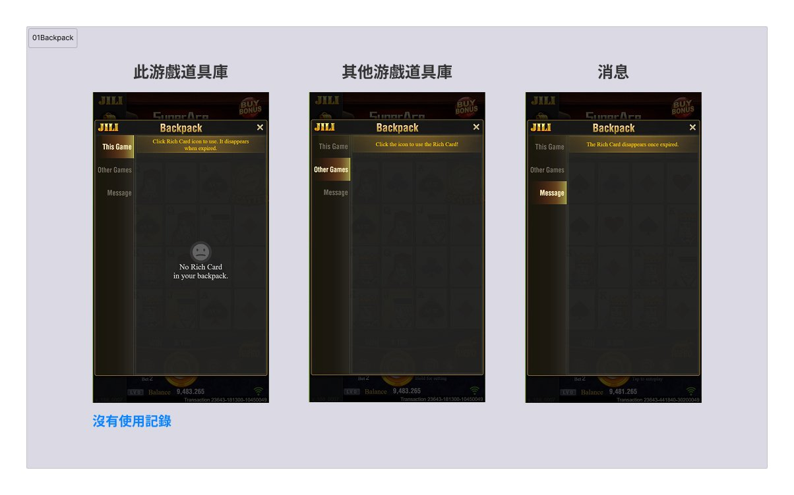
🔍 放大檢視記錄本游戲道具，如 Free Spin 卡。
記錄其他游戲道具。
任務完成通知（含任務條件與獎勵內容）與道具使用紀錄（含贏分與時間），以文字顏色區分。
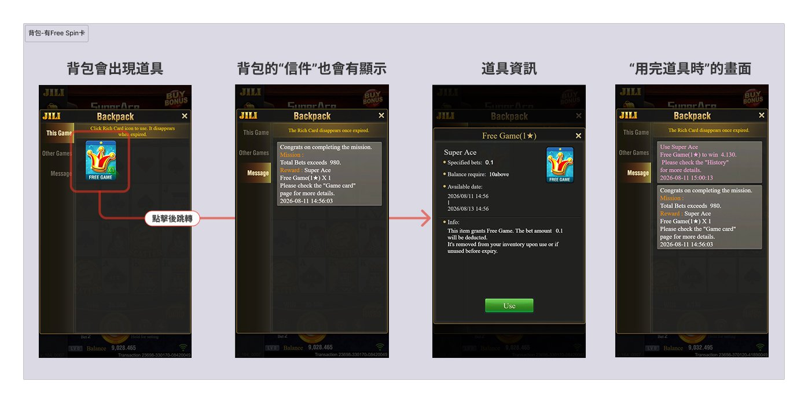
🔍 放大檢視1. 目前若完成任務且拿到道具後，道具會顯示本游戲的空間
2. 背包的信件 (Message) 也會出現提示，告知玩家道具的資訊：道具種類、道具限制、獲得道具時間
3. 在背包中點擊道具會打開詳細資訊的彈窗，以及最下方會有「啓用按鈕」；啓用後會直接進入 Free Spin 的畫面(但下注金額會依道具的限制設定)
4. 利用完畢道具後，背包的信件會出現「利用完道具」的顯示
「本遊戲」有明確空狀態插畫與文案
「其他遊戲」則無空狀態設計——這是 JILI 的疏漏，我們不應照抄
同一個列表同時承載「任務完成通知」與「道具使用紀錄」兩種語意
若我們要開發，建議先想清楚這兩者是否該分流，或以標籤/篩選區分
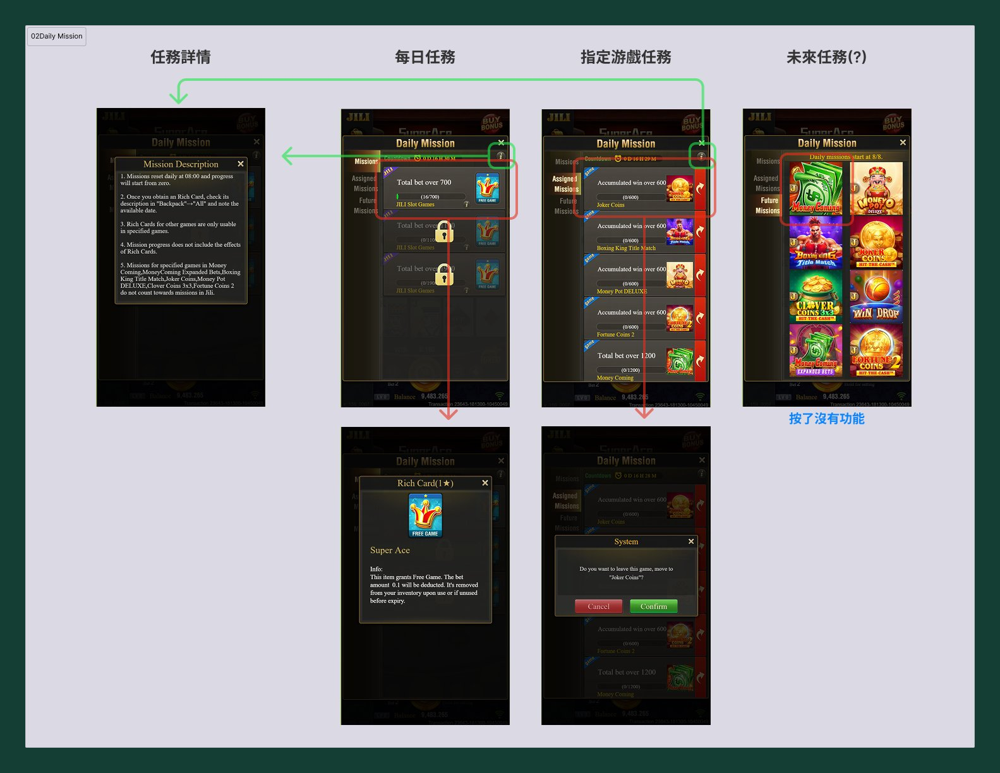
🔍 放大檢視詳細説明任務什麽時候過期、獎勵相關資訊以及使用規則。頁首常駐 Countdown 倒數計時。
在期限内達成任務目標且能獲得獎勵。實機為階梯式解鎖鏈：Total bet over 1650 → 2060 → 2980，後兩張以鎖頭圖示呈現未解鎖狀態。
在期限内達成任務目標且能獲得獎勵；可順便跳轉到其他游戲
以 2×4（共 8 格）縮圖排列預告下一輪將開放任務的游戲，頂部標示開始日期。
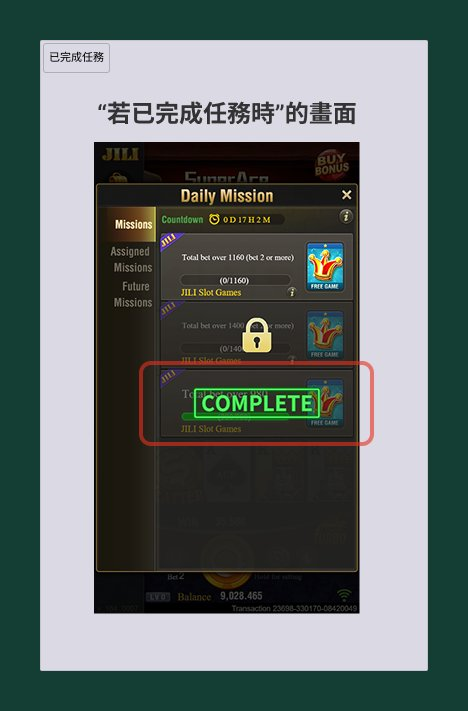
🔍 放大檢視1. 已完成的任務卡自動往下移：在任務完成後，系統會直接把該任務卡往下移，玩家無需親自領取。此外，已完成的任務也會有 COMPLETE 的顯示
2. 解鎖新的任務：當第一任務已完成時，新的任務卡會被開通
活動期限需寫得清楚。JILI 有附加時間倒計時，可以參考
任務 CTA 需明確顯示不同狀態：未完成、已完成、未解鎖
當玩家跳轉到其他游戲時，有彈出「請確認」的彈窗/告知是比較理想的
JILI 同時使用「累積下注」與「累積贏分」兩種指標，兩者對玩家行為的引導方向不同
計算範圍是單一游戲或整個產品線，需在規格階段就定案
Future Missions 以「即將開放」製造回訪誘因，成本低但效果值得參考
需搭配可靠的排程與內容管理後台
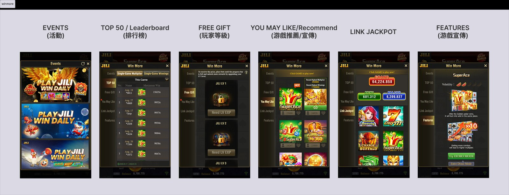
🔍 放大檢視排行榜，可切換 Single-Game Multiplier（欄位 Maximum Win，以倍數排序）與 Single-Game Winnings（欄位 Total Win，以絕對贏分排序），並以下拉選單切換游戲範圍，並標示統計期間。詳見下方「TOP 50 兩種排行維度」。
以 JILI LV 1／LV 2／LV 3… 的寶箱卡片呈現，未達等級顯示鎖頭與「Need LV EXP」。
游戲推薦牆。每張卡含 HOT 標籤、即時在線人數、愛心收藏鍵，滑過時浮出 Recent Highest Multiplier／Recent Highest Winnings 與 GO 按鈕。
輪播式 Banner，展示「PLAY JILI WIN DAILY」跨遊戲導流圖。Banner 本身是入口，點入後為完整的積分賽事頁——詳見下方「Events 活動賽事」。
頂部常駐 GRAND／MINI／MAJOR 三層即時累積獎池金額，下方為參與共享獎池的游戲清單，點擊縮圖可直接開啟該游戲。
顯示當前游戲的 Volatility 波動性評級與玩法機制圖解，並附 DEMO MODE 試玩入口。
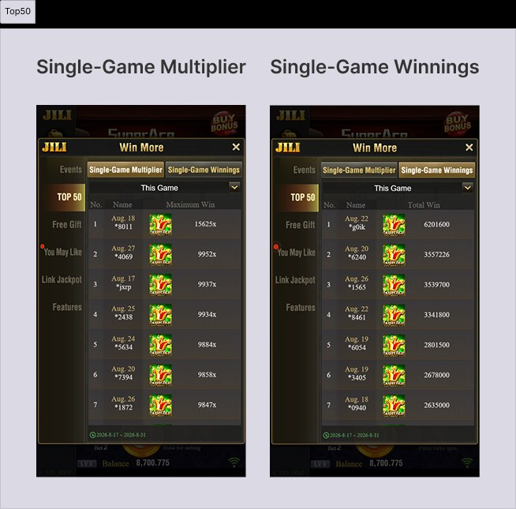
🔍 放大檢視欄位為 Maximum Win，以倍數排序；比的是單局把注金放大了幾倍，與下注金額大小無關。
欄位改為 Total Win，以絕對贏分金額排序。同一個 TOP 50 內兩種維度並存，兩份榜單的玩家與日期完全不同。
兩者皆為名次／日期＋遮蔽帳號／游戲縮圖／數值四欄，上方可切換游戲範圍，底部標示統計期間（實測約為兩週滾動）。
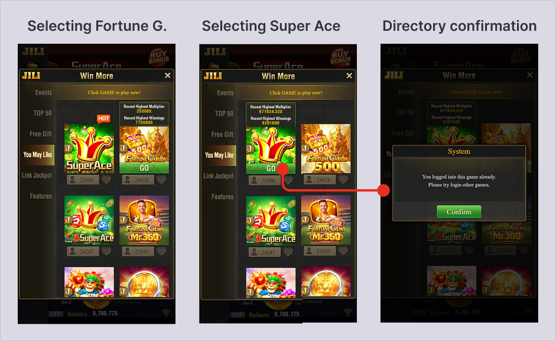
🔍 放大檢視滑過任一張游戲卡會浮出 Recent Highest Multiplier／Recent Highest Winnings 與 GO 按鈕，點擊即跳轉該游戲。
推薦牆同時列出玩家當前所在的游戲，且該卡一樣可點擊、一樣浮出 GO 按鈕，點下去後才以系統彈窗擋下。
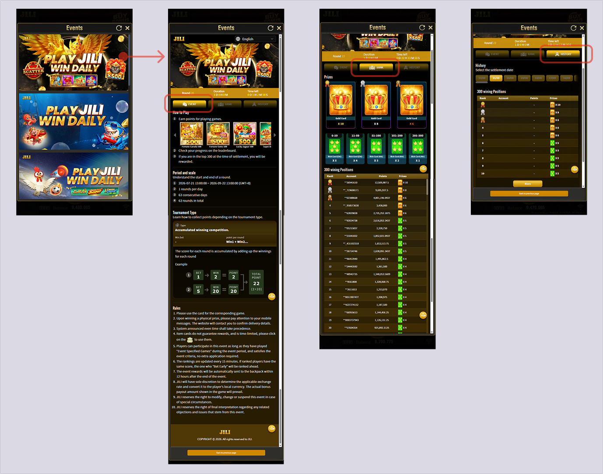
🔍 放大檢視「PLAY JILI WIN DAILY」輪播圖可點擊，點入後是一整套活動賽事頁，分 EVENT／RANK／HISTORY 三個分頁，頁首常駐 Round 進度、單場長度與倒數。
實測為每日 1 場、連續 63 天的長期賽事；計分同樣是 Accumulated Winning（累積贏分），結算時前 300 名都能得獎。
前三名為 Gold Card，其後以 6–10、11–50、51–100、101–200、201–300 分段發 Rich Card，星級與數量逐段遞減。下方為 300 名完整榜單，含遮蔽帳號、Points 與獎品。
可用日期籤選擇過去任一結算日，回看當日的 300 名名單與獎品。這是 Tournament 沒有的能力——同一套賽事引擎，Events 多了可回溯的歷史。
愛心收藏是全份報告中唯一的「玩家主動個人化」動作，其餘皆為系統推播
若要做，需想清楚收藏後如何被再利用（推播？排序？）
排行榜帳號一律遮蔽，但玩家自己那列不遮蔽
此作法可直接沿用
JILI 把等級規則與等級獎勵拆在兩個不同位置，對玩家而言並不直覺
我們開發時建議收斂為單一入口
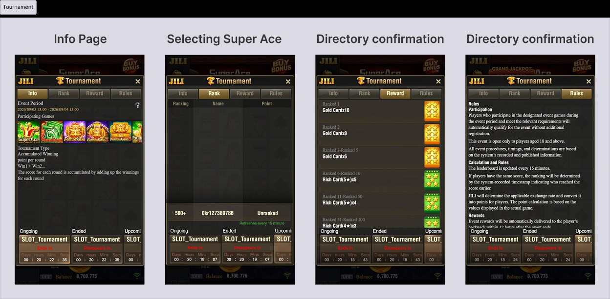
🔍 放大檢視Info／Rank／Reward／Rules。Info 顯示活動期間與 Participating Games 橫向游戲列。實測皆為 24 小時場，以每日一場的節奏滾動。
Tournament Type 為 Accumulated Winning：「point per round，Win1 + Win2…，每回合分數以贏分累加」。
欄位為 Ranking／Name／Point，對手帳號遮蔽；玩家自己那列固定釘在底部，未進榜顯示 Unranked，並標示每 15 分鐘更新。
底部並列 Ongoing／Ended／Upcoming 三種狀態卡，各自帶倒數（Ends in／Disappears in／開始倒數），可橫向捲動。
依名次分段發獎，前三名為 Gold Card，其後 6–10、11–50、51–100 分段發 Rich Card，星級與數量逐段遞減。前 100 名皆有獎，等於把中段玩家也納入誘因範圍。
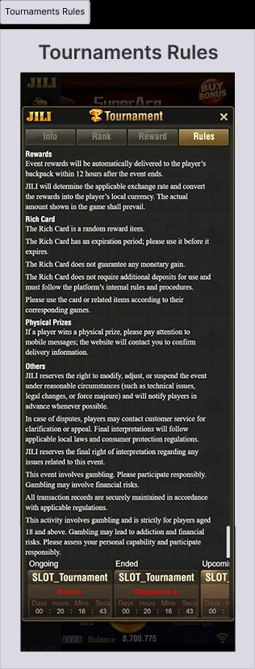
🔍 放大檢視活動期間內玩該場指定游戲並達成條件即自動參賽，無需報名；限 18 歲以上。
排行榜每 15 分鐘更新；同分時以系統記錄較早達成者排前。贏分會依匯率換算為分數，以游戲內實際顯示為準。
賽事結束後 12 小時內自動發送至玩家背包，無需手動領取。Rich Card 屬隨機道具、有使用期限、不保證任何金錢收益，且不需額外儲值即可使用；實體獎品另由官方聯繫確認寄送資訊。
JILI 保留因技術、法規或不可抗力而修改／暫停賽事的權利，並保留最終解釋權；爭議循客服申訴。頁尾另附責任博彩與 18+ 警語，明示「可能導致成癮與財務風險」。
以「贏分」計分會偏向高波動玩法，以「下注額」計分則直接獎勵投注量
後者在部分司法管轄區屬敏感設計，建議先確認目標市場再定案
同時呈現進行中／已結束／即將開始，讓玩家隨時知道下一場何時來
已結束場次保留一段時間再消失（Disappears in），值得參考
JILI 直接標示「每 15 分鐘更新」，可降低玩家對名次落後的客訴
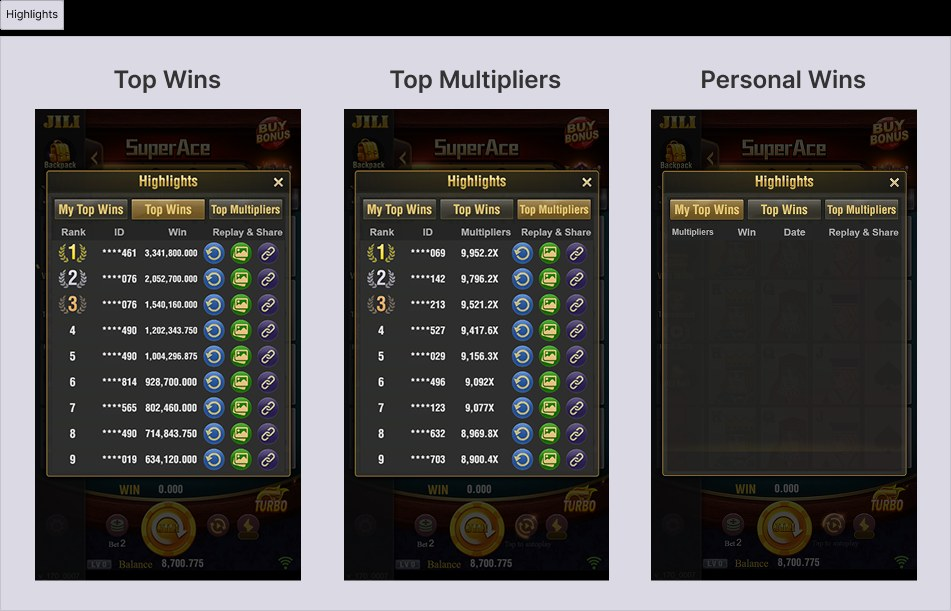
🔍 放大檢視My Top Wins／Top Wins／Top Multipliers。前三名附金銀銅桂冠圖示，帳號一律遮蔽。兩個公開榜的欄位為 Rank／ID／數值／Replay & Share；My Top Wins 多一個 Date 欄位。
每一列都有三個操作鍵：回放該局、存成圖片、複製分享連結。這是全份報告中唯一具備對外擴散性質的功能——其餘模組都只作用於既有玩家。
本次帳號在 My Top Wins 沒有任何紀錄，畫面只留下欄位標題與一片空白，沒有插畫、沒有文案、也沒有引導。與背包「其他游戲」分頁相同——JILI 在空狀態上是系統性的疏漏，而非單一頁面的遺漏。
可對外分享的贏分圖片等同於行銷素材，在多數市場受廣告法規約束
需確認是否要加上責任博彩標語與年齡警語
要能回放單局需保存每局完整結果資料，須評估儲存期限與容量
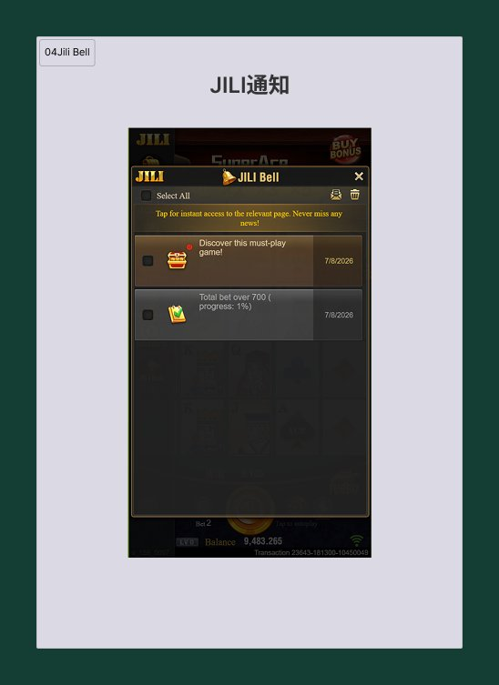
🔍 放大檢視一個可收納系統通告或者宣傳的空間，同時也可接收對於玩家的消息，如：任務進度。
頁首有 Select All 核取方塊、全部已讀與刪除兩個圖示；每封信件左側有獨立核取方塊，右側顯示日期。未讀信件帶紅點。
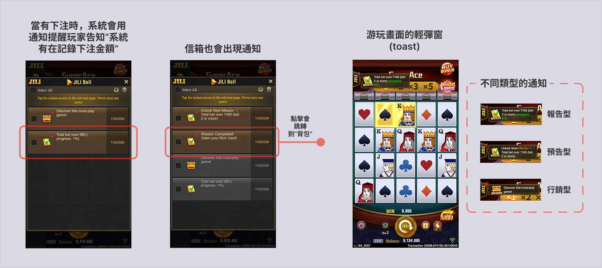
🔍 放大檢視系統會在以下幾個狀況發送通知：顯示任務完成度、任務已完成、解鎖新任務。玩家可點擊該信件並跳轉到相對應的畫面。實機另見行銷型推播。
每一次信箱有新的信件時，在游戲畫面都會有「輕彈窗」(toast) 出現以及有紅點的提示；toast 大概會出現 3-5 秒。
目前觀察可分 3 種：報告型（當下事件進度）、預告型（未來會發生的事件）、行銷型（推銷 JILI 的游戲或功能）。
如同 Mission 的任務卡，信件本身也需要有不同的呈現狀態，如：未讀和已讀
若有未讀的信件，除了信件本身有紅點，游戲畫面側邊欄入口也會出現紅點（已覆核確認）
紅點的條件是什麽？什麽事件導致紅點出現與消失，系統要怎麽偵測這些「事件」
JILI 有這些功能，但開發時可考慮是否真的需要，以及其真正意義
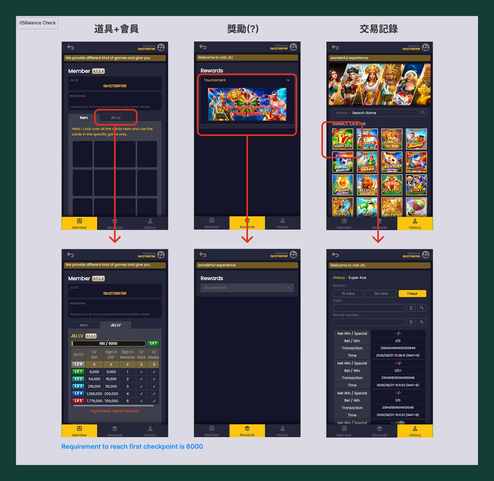
🔍 放大檢視分成 3 頁：會員/玩家資訊(Member)、獎勵 (Rewards) 和 歷史 (History)，主要重點是會員/玩家資訊。
顯示 JILI ID、Nickname 與 LV 徽章，並說明等級直接連動返水。下方分頁：Item（道具）＋ JILI LV（等級）。
原報告記為「暫無功能」，該說法不成立——09/08 實機覆核確認：僅有 Tournament 一個可折疊區塊，點擊展開／收合，內容為賽事宣傳橫幅，無其他獎勵項目。
顯示玩家在游戲的交易記錄，可用 15 mins／30 mins／1 hour 快速篩選，另可依日期與 Round number 查詢。
表格欄位：JILI LV／LV EXP／Sign in EXP／Sign in Rewards／LV Rank／LV Mission（另有欄位需橫向捲動）。
門檻為等比放大：LV1 6,000／LV2 54,000／LV3 216,000／LV4 1,296,000／LV5 7,776,000。
LV0 各項權益皆為 X，即排行榜與任務本身也被等級鎖住。
1. Bet 1 coin = 1 point of JILI LV EXP
2. JILI LV 適用於老虎機與捕魚機（非只有老虎機）
3. 特殊情況下等級可能被重置
4. 等級屬額外回饋服務，JILI 保留調整權利
連續 15 天未遊玩：等級保留，但 EXP 進度歸零
連續 30 天未遊玩：等級與 EXP 一併歸零
目前等級、下一等級與 EXP 進度條並列，數值即時可見
15 天砍進度、30 天砍等級，是比單純「獎勵過期」更強的回訪壓力機制
但也可能造成流失玩家的負面觀感，需權衡
JILI 將等級直接連到返水比例，等於把 CRM 與實際成本結構綁在一起
導入前須先與財務／營運確認可承受範圍
以預告牆製造回訪誘因，08/24 覆核已上線
一個方便做平台行銷活動的空間
提供玩家查看與游戲相關資訊的空間，格式可通用全部 JILI 的游戲
側邊欄實為 7 個模組。等級規則在交易記錄，但等級獎勵領取在 WIN MORE，入口分散
指定任務、共用獎池、推薦牆三者都在把玩家導回 JILI 產品線
方便未來宣傳：新產品上架、系統維修公告、另類獎勵派發空間等。
全份報告中唯一的對外擴散功能，若我方 CRM 只規劃留存則為明顯缺口
JILI 已有簽到並綁定等級與每週二重置，屬低成本高頻回訪機制
本頁截圖已全數補齊；交易記錄的 Rewards 頁內容仍待實機覆核
初步競品研究，資料來源與 FA CHAI／JILI 不同——並非登入平台實測，而是使用者提供的實機截圖（游戲：Bastet）逐項記錄，內容將隨截圖增加持續擴充。
JDB Gaming 官網（jdbgaming.com）僅為對外行銷／招商網站（Games／About／Services／Contact／FAQ／News），未見任何 CRM 或玩家互動機制說明；官網內建的 Demo 試玩無法載入（疑似阻擋自動化瀏覽）。本頁內容改為根據使用者提供之 Bastet 實機截圖記錄，目前僅涵蓋 Member（Backpack）、Jackpot 與 Share（分享／回放）三項功能，尚不足以與 FA CHAI／JILI 做完整對照。
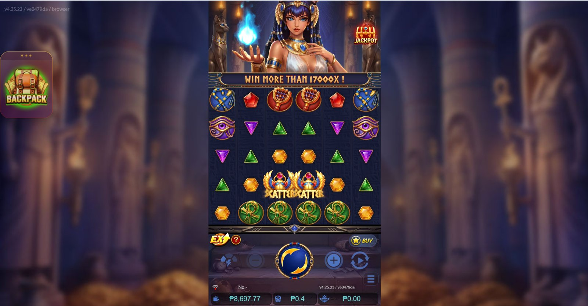
🔍 放大檢視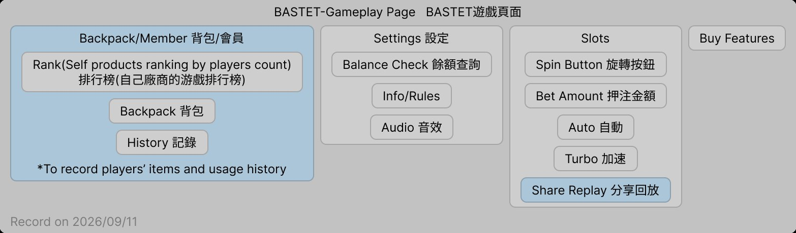
🔍 放大檢視Bastet 遊戲頁面主要分為四塊：Backpack/Member 背包/會員（含 Rank／Backpack／History，即本頁 01 節的 Member 彈窗）、Settings 設定（餘額查詢／規則説明／音效）、Slots（旋轉、押注、Auto、Turbo，以及本頁 03 節提到的 Share Replay 分享回放），與獨立的 Buy Features。
點擊左側 Backpack 圖示，實際開啟的是一個 Member 彈窗，內含三個分頁：RANK／BACKPACK／HISTORY。
顯示該公司旗下游戲的熱門排行，純資訊展示、不可互動，並非玩家個人排名。
目前為空，附一顆 VIEW HISTORY 按鈕。
道具異動紀錄表，目前同樣空白。
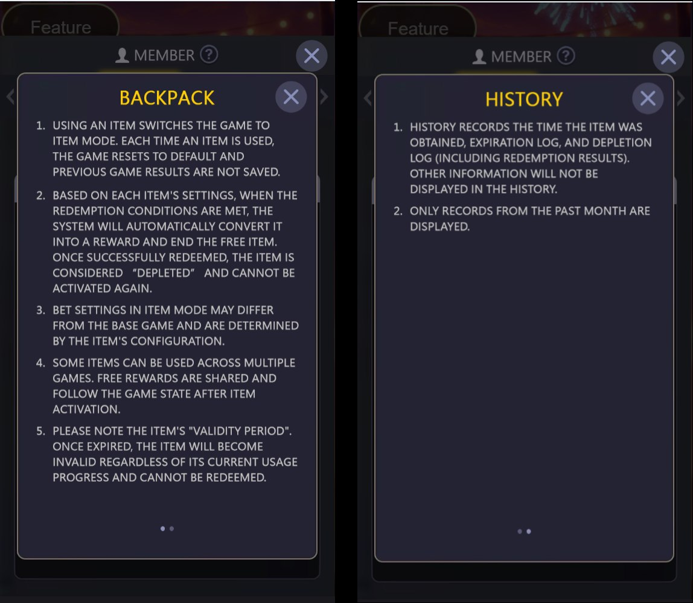
🔍 放大檢視展示背包的規則，內容涵蓋道具的使用教學、使用限制、效期等細節，詳見左圖。
僅記錄道具的取得時間、到期紀錄與銷毀紀錄（含兌換結果），其他資訊不顯示；且僅顯示近一個月的紀錄。
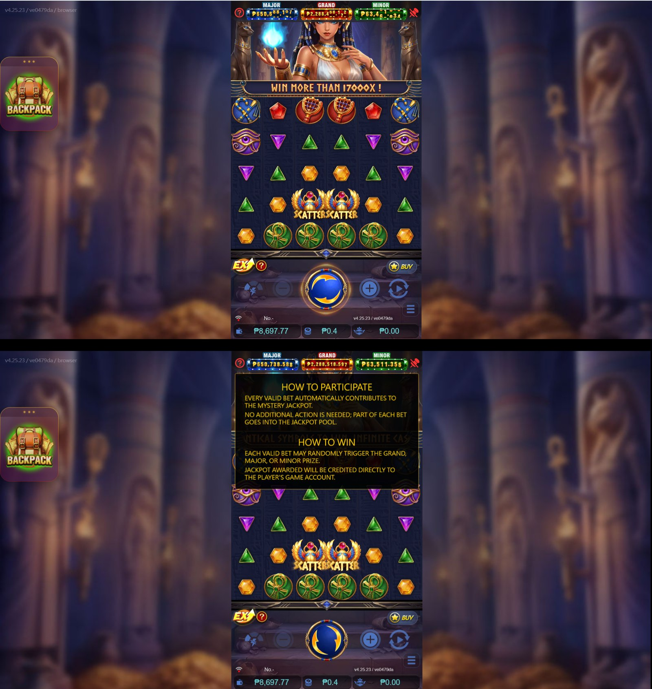
🔍 放大檢視畫面頂部固定顯示 MAJOR／GRAND／MINOR 三層獎池即時金額（披索計價）。
每筆有效投注自動貢獻至獎池，玩家無需額外操作；每筆有效投注亦有隨機機會觸發 Grand／Major／Minor 任一獎項，中獎金額直接存入玩家游戲帳戶。
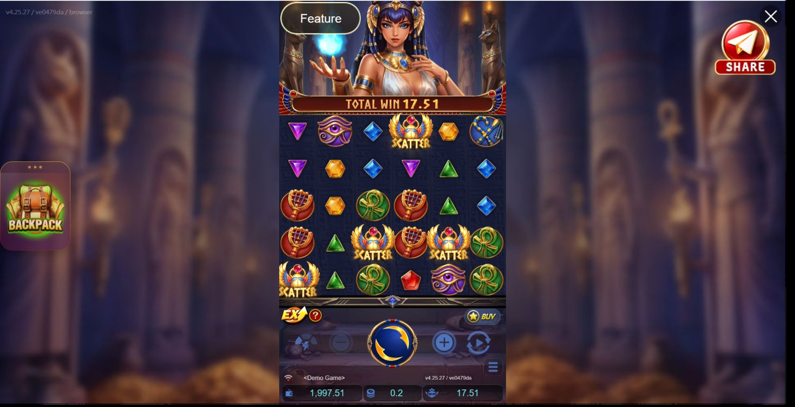
🔍 放大檢視大贏分結算後，畫面右上角會新增一顆紅色 SHARE 分享按鈕（紙飛機圖示），用途為將該局回放／戰績分享出去。
目前僅觀察到贏分結算畫面會出現此按鈕，一般遊玩狀態未見；玩家至少達到 Big Win 等級的贏分才會出現此按鈕。
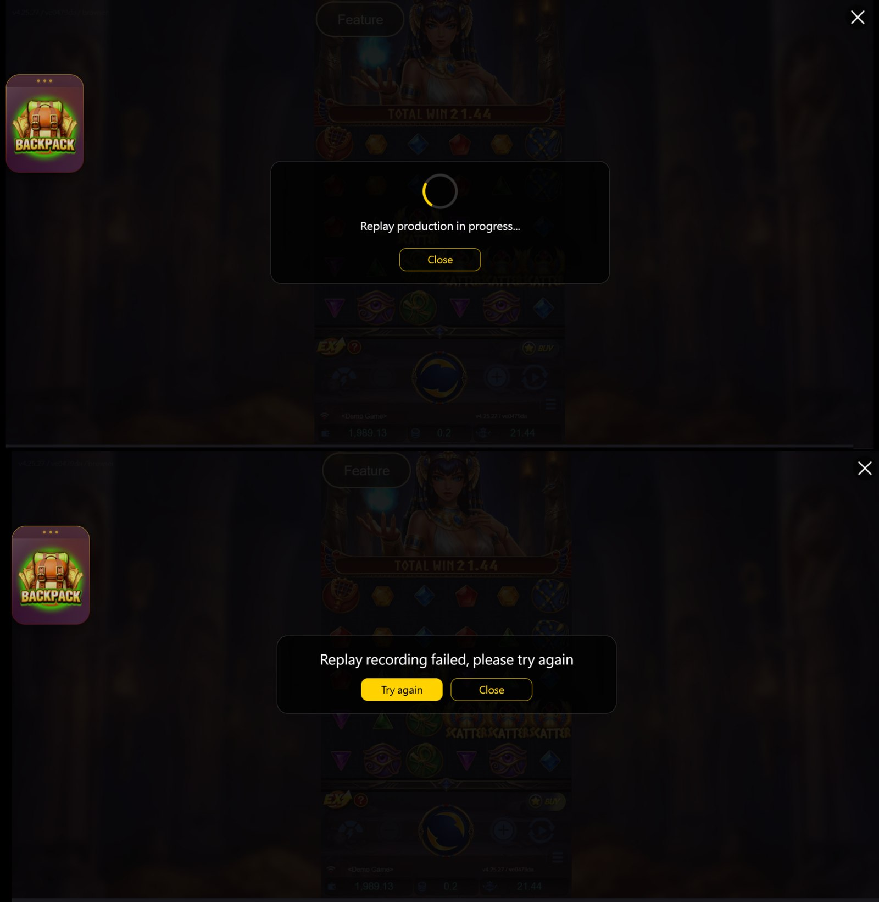
🔍 放大檢視點擊 SHARE 後彈出讀取彈窗，顯示正在產生回放（Replay）。
讀取結束後彈出「Replay recording failed, please try again」，附 Try again／Close 兩顆按鈕；多次點擊 Try again 皆未成功產生回放。
FA CHAI（DJ BOOM BOOM）、JILI（Super Ace）與 JDB Gaming（Bastet）CRM 功能逐項對照，內容整理自本報告各頁的實機記錄。
✓有此功能 ✕未觀察到此功能 △有但不完整、或存在疑慮
| 任務MISSIONS | 背包BACKPACK | 等級LEVELS | 排行榜LEADERBOARD | 探索DISCOVERY | 溝通COMMUNICATION | |
|---|---|---|---|---|---|---|
| FA CHAI | 5/8 | 4/4 | 4/8 | 4/7 | 4/7 | 3/6 |
| JILI | 7/8 | 2/4 | 6/8 | 6/7 | 5/7 | 5/6 |
| JDB | 0/8 | 0/4 | 0/8 | 0/7 | 0/7 | 1/6 |
| 功能 | FA CHAI（DJ BOOM BOOM） | JILI（Super Ace） | JDB Gaming（Bastet） |
|---|---|---|---|
| 每日任務 | ✓ | ✓ | ✕目前唯一入口 Member 彈窗內未見任務功能 |
| 每周任務層（當周完成 3 次） | ✓挑戰／指定各一組 | ✕ | ✕ |
| 任務自動刷新 | ✕需玩家自行重開游戲（12:00 GMT+8） | ✓每日 08:00 自動重置，頁首附倒數 | ✕ |
| 指定游戲任務 | ✓僅標示游戲名稱，無跳轉 | ✓每張卡可直接跳轉該游戲 | ✕ |
| 未來任務預告 | ✕ | ✓2×4 縮圖預告牆，標示開始日期 | ✕ |
| 排除規則明示 | △SUGAR BANG BANG 2 疑似不計，未見說明 | ✓排除規則寫入說明文字 | ✕ |
| 完成後自動下移、免手動領取 | ✓ | ✓ | ✕ |
| 未解鎖狀態顯示 | ✓鎖頭圖示 | ✓鎖頭圖示，階梯式解鎖鏈 | ✕ |
| 功能 | FA CHAI（DJ BOOM BOOM） | JILI（Super Ace） | JDB Gaming（Bastet） |
|---|---|---|---|
| 本游戲／其他游戲分頁 | ✓ | ✓ | ✕單一清單，無分頁設計 |
| 各分頁皆有空狀態 | ✓三頁皆有插畫與引導 CTA | △僅「本游戲」有，「其他游戲」完全沒有 | △僅純文字「Oops... No items yet!」＋按鈕，無插畫 |
| 道具記錄與狀態篩選 | ✓全部／未使用／已使用／已過期，上限 60 筆 | △僅信息列表，且混合任務通知與使用紀錄 | △HISTORY 頁有下拉篩選欄位，但目前無資料可驗證 |
| 由背包直接使用道具 | ✓ | ✓ | ✕背包目前為空，無可用道具 |
| 功能 | FA CHAI（DJ BOOM BOOM） | JILI（Super Ace） | JDB Gaming（Bastet） |
|---|---|---|---|
| 首個獎勵門檻 | ✓660 EXP（BET 1 = 1 EXP） | ✓6,000 EXP（LV1，Bet 1 coin = 1 EXP） | ✕未見對應的等級／經驗值機制 |
| 等級與 EXP 進度條 | ✓每 5 級一次獎勵 | ✓JILI LV，門檻等比放大 | ✕ |
| 單一入口（查看與領取同處） | ✓ | ✕規則在交易記錄、領取在 WIN MORE | ✕ |
| 等級連動返水 | ✕ | ✓等級越高返水越好 | ✕ |
| 未遊玩衰退機制 | ✕ | ✓15 天歸零進度、30 天歸零等級 | ✕ |
| 每日簽到 | ✕ | ✓綁定等級，每週二重置 | ✕ |
| 等級鎖住其他功能 | ✕ | △LV0 連排行榜與任務都被鎖 | ✕ |
| 升等提示 Toast | ✓ | ✓ | ✕ |
| 功能 | FA CHAI（DJ BOOM BOOM） | JILI（Super Ace） | JDB Gaming（Bastet） |
|---|---|---|---|
| 贏分／倍數排行榜 | ✓可切換本游戲／全部游戲 | ✓TOP 50，可切換游戲範圍 | ✕RANK 分頁僅為公司熱門游戲排行，非分數榜 |
| 單局回放 | ✓ | ✓ | ✕ |
| 玩家自己那列固定顯示 | ✓未進榜顯示「-」 | ✓未進榜顯示 Unranked（500+） | ✕RANK 為純資訊展示，無玩家個人排名可言 |
| 限時競賽與賽事生命週期 | ✕ | ✓進行中／已結束／即將開始，每 15 分鐘更新 | ✕ |
| 對外分享（存圖／複製連結） | ✕ | ✓HIGHLIGHTS，全份報告唯一對外擴散功能 | ✕ |
| 與付費功能綁定 | △導覽明寫「Use Buy Feature to go on leaderboard!」 | ✕ | ✕ |
| 帳號遮蔽 | ✓ | ✓玩家自己那列不遮蔽 | ✕ |
| 功能 | FA CHAI（DJ BOOM BOOM） | JILI（Super Ace） | JDB Gaming（Bastet） |
|---|---|---|---|
| 推薦牆 | ✓RECOMMENDED | ✓WIN MORE → You May Like | △RANK 分頁可視為變體，但為公司熱門榜而非個人化推薦 |
| 玩法分類標籤 | ✓Megaways／Multiplier／Transform WILD 等 | ✕僅 HOT 標籤與在線人數 | ✕ |
| 即時在線人數 | ✕ | ✓ | ✕ |
| 收藏鍵 | ✓★ | ✓♥ | ✕ |
| 獨立收藏模組 | ✓FAVORITES，空狀態直接轉為推薦版位 | ✕有收藏鍵但無獨立模組 | ✕ |
| 玩法說明／波動性／試玩 | ✕ | ✓WIN MORE → Features，附 DEMO MODE | ✕ |
| 行銷輪播 Banner | ✕ | ✓WIN MORE → Events | ✕ |
| 功能 | FA CHAI（DJ BOOM BOOM） | JILI（Super Ace） | JDB Gaming（Bastet） |
|---|---|---|---|
| 通知信箱 | ✕ | ✓JILI Bell，全選／全部已讀／刪除 | ✕ |
| Toast 提示 | ✓僅升等提示 | ✓報告型／預告型／行銷型三種 | ✕ |
| 玩家資訊專區 | ✕ | ✓JILI ID／暱稱／LV 徽章 | ✕ |
| 交易記錄查詢 | △平台阻擋存取，本次未能覆核 | ✓15 分／30 分／1 小時＋日期＋局號 | △HISTORY 分頁僅記錄道具，非交易／局號紀錄 |
| 跨游戲累積獎池 | ✓FC JACKPOT（內頁尚未拍攝） | ✓Slot Jackpot＋Link Jackpot 三層 | ✓MAJOR／GRAND／MINOR 三層即時獎池 |
| CRM 集中度 | ✓6 個模組全在側邊欄 | ✕側邊欄 7 模組＋交易記錄在設定內 | ✕ |
挑戰與指定任務各有一組「當周完成 3 次」的上層獎勵，在每日循環之外多一層回訪理由。
推薦牆依機制分類，玩家可依玩法而非畫面挑選游戲。
由 RECOMMENDED 的 ★ 收藏彙整而成，屬唯一由玩家主動操作的個人化功能，且空狀態直接轉為推薦版位。
背包三個分頁皆有插畫、文案與引導 CTA，JILI 的「其他游戲」則完全沒有。
全部／未使用／已使用／已過期四種狀態可篩選，來源與到期時間皆可追溯。
綁定等級並於每週二重置，屬低成本、高頻率的回訪機制。
可承載新品上架、維修公告與行銷推播的平台級溝通版位。
具完整賽事生命週期（進行中／已結束／即將開始）與明示更新頻率。
回放、存圖與複製連結；屬獲客／擴散而非留存，若我方只規劃留存即為缺口。
以 2×4 縮圖排列預告下一輪任務游戲，成本低但能製造回訪誘因。
等級直接連動返水比例，並以 15／30 天兩段式衰退施加回訪壓力。
波動性評級與機制圖解，並附 DEMO MODE 試玩。
Member 頁集中呈現玩家身分與等級；Events 提供輪播式行銷 Banner。
目前僅實測到 Backpack(Member) 與 Jackpot 兩項功能，尚不足以判斷 JDB 是否有真正意義上的「獨有」強項；以下僅為初步觀察，需待更多畫面才能確認究竟是缺口還是特色。
MAJOR／GRAND／MINOR 三個數字同時跑動疊加在主畫面上方，视觉存在感高於 FA CHAI／JILI 的獎池呈現方式，但尚未實測是否有專屬領獎頁面。
Backpack／History 的規則説明直接以「？」彈窗掛在對應分頁旁，不須跳轉其他頁面，但整體背包功能仍處於「尚無實際道具可用」的空狀態。
縱軸為各分類的覆蓋率（該分類中 ✓ 的項目數 ÷ 該分類項目總數）。橫軸為分類而非時間，折線僅用於比較三家的輪廓，線段斜率本身沒有意義。
FA CHAI 把所有 CRM 模組集中在同一個側邊欄——任務、背包、等級、排行榜、推薦、收藏各只有一個入口，不需要在選單間跳轉。JILI 則把 CRM 拆成三個獨立區塊：側邊欄（含 Jackpot、Win More、Tournament、Highlights 等 7 個模組）、另一個 Member／交易記錄專區用來查等級規則，再加上要到 WIN MORE → Free Gift 才能真正領取等級獎勵。
FA CHAI 的重心在用重複建立習慣：兩條各自獨立的每周任務線疊在每日任務之上、收藏清單、推薦牆的玩法分類標籤，這些機制的共通點是常常給玩家一個小小的回訪理由，並不直接綁定金流壓力。JILI 則更偏向與營收綁定的留存設計：等級直接連動返水比例、15／30 天兩段式衰退機制主動懲罰不活躍、每日簽到綁定等級，再加上 FA CHAI 沒有對應功能的對外分享 HIGHLIGHTS。
FA CHAI（DJ BOOM BOOM）與 JILI（Super Ace）等級系統的流程圖解對照，聚焦兩者機制設計上最關鍵的差異：獎勵是否會用完。逐項功能對照請見 Comparisons 分頁「03 等級與忠誠」。
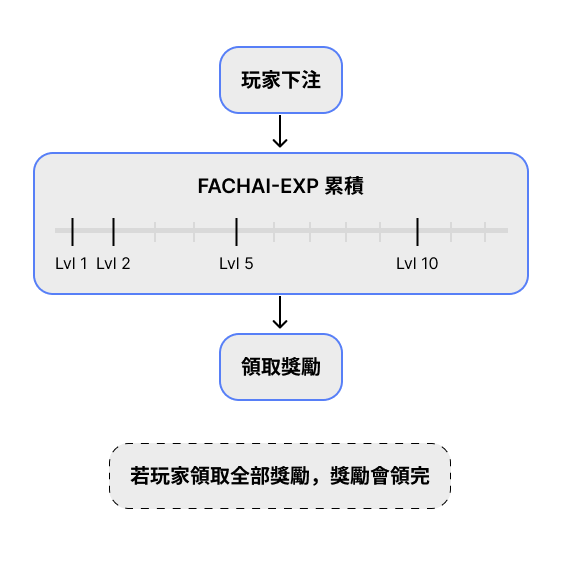
🔍 放大檢視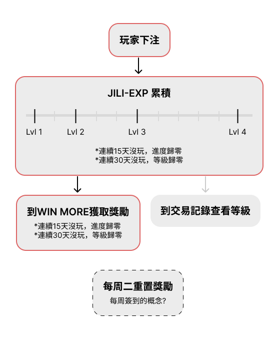
🔍 放大檢視兩家的「等級」都由下注累積 EXP 驅動，但驅動之後接的是完全不同的機制。FA CHAI 比較像遊戲裡的「里程碑存檔點」：等距門檻、同頁查看與領取、沒有任何隨時間衰退的機制。JILI 比較像一項要持續維護的「KPI 指標」：門檻逐級放大、查看規則與領取獎勵分處兩地（交易記錄／WIN MORE），並有 15／30 天兩段式衰退機制。
沒有衰退機制，進度永久保留；好處是不會平白丟失，代價是等級一旦封頂，就再也沒有新的等級獎勵可拿。
15 天無遊玩重置進度、30 天無遊玩重置等級；已領過的 Free Gift 寶箱會在重新爬升後再次可解鎖領取，獎勵池不會像 FA CHAI 一樣觸頂用完。